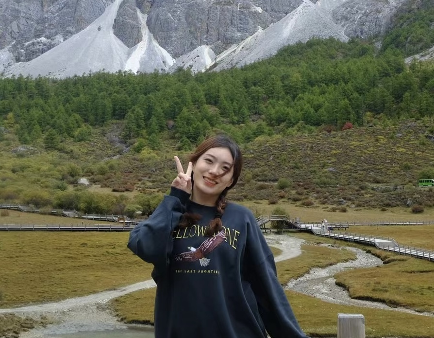
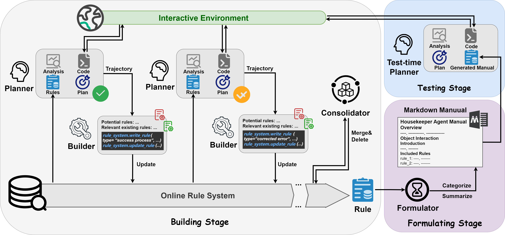
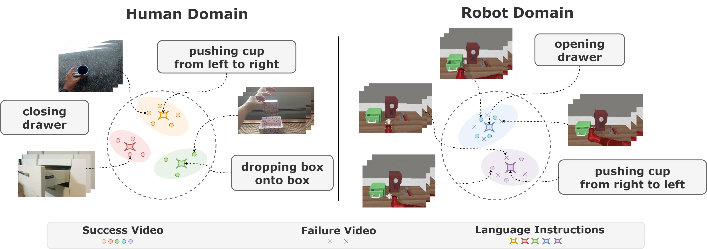
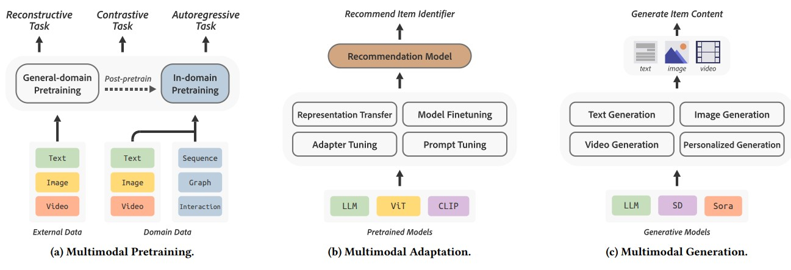
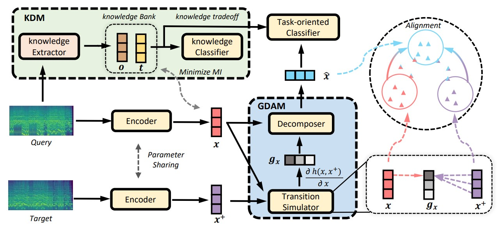

|
Yanting Yang
I am a master student at Zhejiang University, advised by Prof. Xiaofei He, and I am privileged to work closely with A/Prof. Minghao Chen and A/Prof. Wenxiao Wang. I have also worked with Prof. Zhou Zhao and Dr. Jieming Zhu. Previously, I completed my B.S. in Computer Science at Wuhan University of Technology, working with Prof. Lin Li.
My research interests lie in enhancing robots' generalization capabilities to perform effectively across diverse, open-world tasks. Specifically, I focus on leveraging foundation models and large-scale internet data to advance robotic systems in perception, planning, and control. Additionally, I am keen on designing embodied agents that can interact proficiently with the physical world while exhibiting informed reasoning and planning capabilities.
Note!!! I am actively seeking PhD opportunities beginning in Fall 2025, please contact me if you have a suitable position!
yantingyang[at]zju.edu.cn /
CV /
Scholar /
Twitter /
Github
|

|
Publications
* indicate equal contribution
|
|

|
AutoManual: Generating Instruction Manuals by LLM Agents via Interactive Environmental Learning
Minghao Chen,
Yihang Li,
Yanting Yang,
Shiyu Yu,
Binbin Lin,
Xiaofei He
Submitted to NeurIPS, 2024, under review
paper / code
|
|

|
Adapt2Reward: Adapting Video-Language Models to Generalizable Robotic Rewards via Failure Prompt
Yanting Yang*,
Minghao Chen*,
Qibo Qiu,
Jiahao Wu,
Wenxiao Wang,
Binbin Lin,
Ziyu Guan,
Xiaofei He
ECCV, 2024
paper
|
|

|
Multimodal Pretraining, Adaptation, and Generation for Recommendation: A Survey
Qijiong Liu,
Jieming Zhu,
Yanting Yang,
Quanyu Dai,
Zhaocheng Du,
Xiao-Ming Wu
Zhou Zhao
KDD, 2024
paper /
slide
|
|

|
Discover: Disentangled Music Representation Learning for Cover Song Identification
Jiahao Xun,
Shengyu Zhang,
Yanting Yang,
Jieming Zhu,
Liqun Deng,
Zhou Zhao,
Zhenhua Dong,
Ruiqi Li,
Lichao Zhang,
Fei Wu
SIGIR, 2023
paper
|
|
{kind=link}